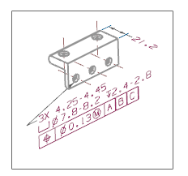
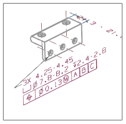
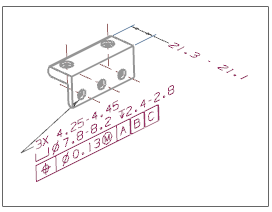

在设置组中，点击视图样式 。
点击继承 PMI 选项卡。
在继承 PMI 组中，选择来自模型视图。
点击确定。
单击图形窗口以放置视图。
关闭投影视图对话框。
您应该在新图纸页中看到了 PMI 数据。

在图形窗口中右击尺寸21.2并选择编辑。
|
注释 |
如果无法使用编辑选项，那么可能是因为您没有写入的权限。 |
在编辑尺寸对话条上的值列表中，选择极限值，一行，大值在前，该选项显示为1.05-.98。
单击鼠标中键以保存您的编辑。
在图形窗口中，注意到尺寸值已发生变化。

在图形窗口中将修改后的 PMI 拖动到更合适的位置。
NX 将调整视图大小以容纳尺寸。
